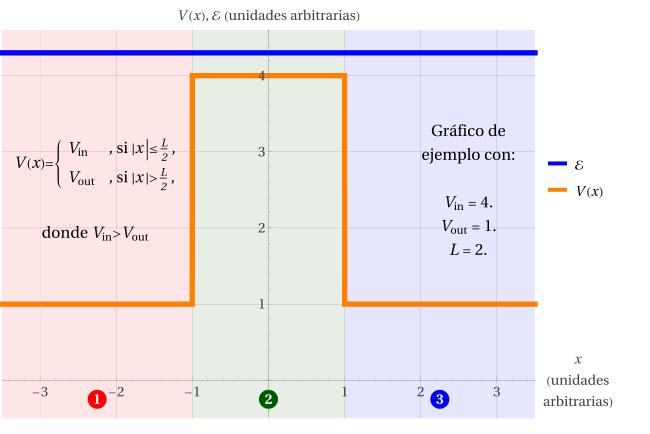

Caso (a): \(\mathcal{E}>V_\text{in}>V_\text{out}\)

Todos los \(k_j\) son reales y positivos, de modo que las soluciones son oscilatorias en las tres regiones. Nuevamente, supondremos que la onda viene desde la izquierda, de modo que \(A_1\) será usado como coeficiente de referencia. No habiendo con qué reflejarse en la Región 3, podemos ya considerar que \(B_3=0\). Este caso será estudiado en función de que \(\eta>1\).